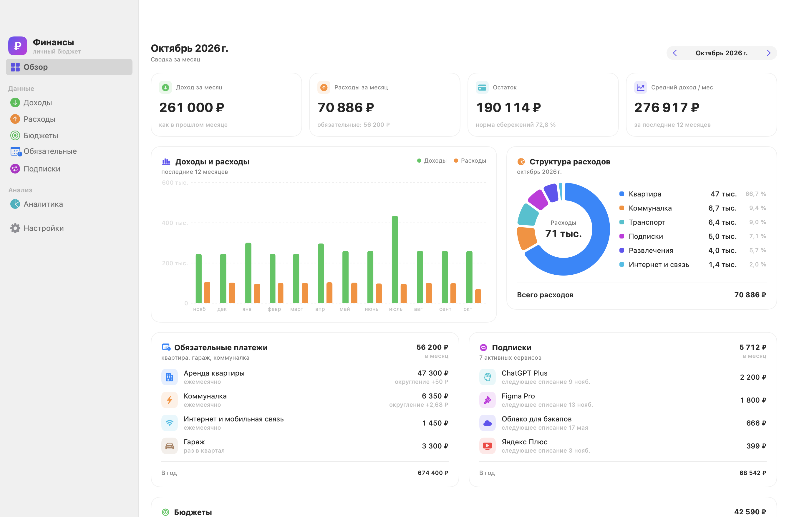
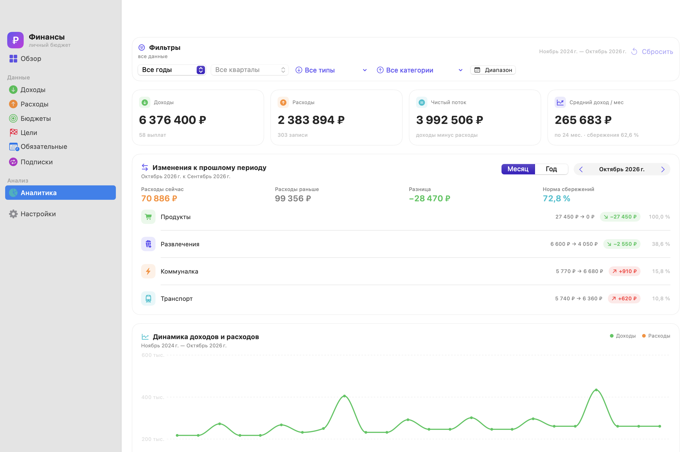
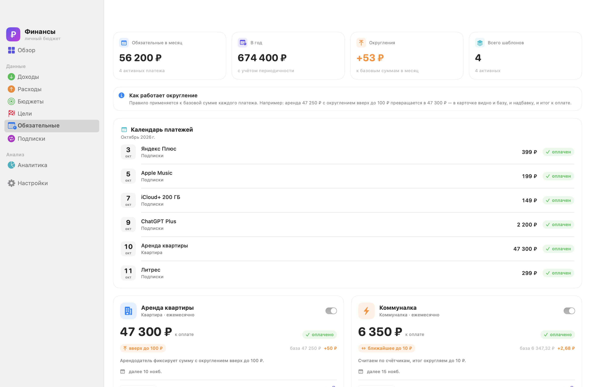
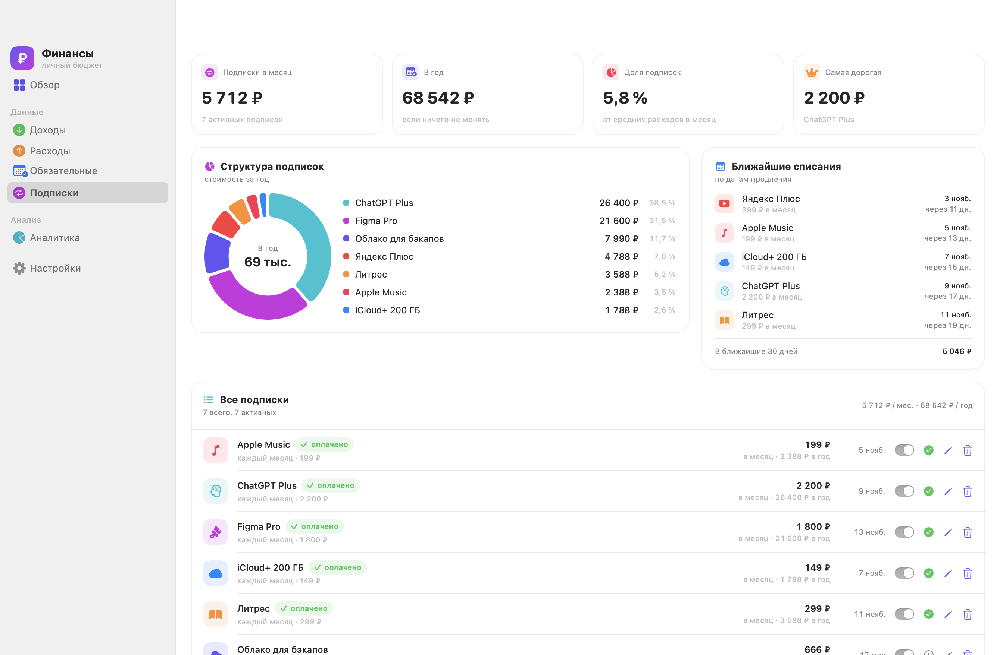
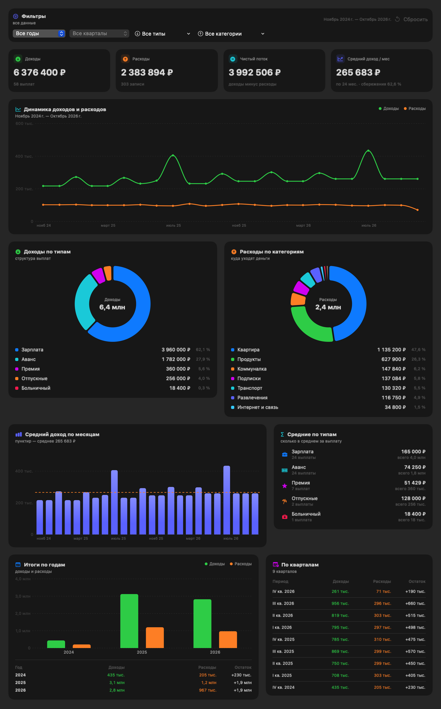

Выплаты с типами
Зарплата, аванс, отпускные, премия, больничный. Средняя выплата, медиана, средняя зарплата и фильтры по году.
macOS · SwiftUI · локально
Зарплата, аванс, отпускные, квартира, гараж, коммуналка и подписки — в одном нативном приложении. С округлениями, средними и графиками, которые считаются сами.
macOS 14+ · без аккаунта · данные не покидают Mac

Возможности
Не очередная таблица с формулами, а приложение, которое понимает типы выплат, периодичность и округления.
Зарплата, аванс, отпускные, премия, больничный. Средняя выплата, медиана, средняя зарплата и фильтры по году.
Аренда, гараж, коммуналка и интернет. Базовая сумма, правило округления, надбавка и итог к оплате — в одной карточке.
Месячная и годовая нагрузка, доля в расходах, ближайшие списания и запись оплаты одним нажатием.
Динамика по месяцам, два бублика, средние по типам выплат, итоги по годам и кварталам. Всё с фильтрами.
JSON-бэкап с восстановлением, автобэкапы перед опасными действиями, импорт CSV и демо-набор за 24 месяца.
SwiftData на вашем Mac, без аккаунтов и телеметрии. Данные не уходят даже на проверку обновлений.
Скриншоты
Светлая и тёмная темы, нативные контролы macOS и графики Swift Charts. Нажмите на скриншот, чтобы открыть его целиком.




Округления
Для каждого регулярного платежа задаётся базовая сумма и правило округления. Приложение показывает не только итог, но и откуда он взялся.
округление вверх до 100 ₽
Roadmap
Сначала надёжность и сохранность данных, потом новые сценарии. Полный план — с бэклогом фич и реестром техдолга.
Тесты, обработка ошибок, восстановление store, доступность и CI.
JSON-бэкапы, импорт CSV, миграции SwiftData и деньги в копейках.
Бюджеты по категориям, прогноз остатка, цели накоплений и уведомления.
Установка
Нужны macOS 14+, Xcode 16+ и Swift 6. Внешних зависимостей нет.
# клонировать репозиторий
git clone https://github.com/fso13/household-finances-apple.git
cd household-finances-apple
# собрать .app и запустить
./Scripts/package_app.sh
open "dist/Финансы.app"Скачать .app из GitHub Releases или собрать локально командами слева.
Выберите демо-данные за 24 месяца или начните с пустой базы. Демо можно удалить в настройках.
~/Library/Application Support/Finances/FinancesV2.store. Без облака и аккаунта.
Developer ID нет, поэтому подпись ad-hoc. Если macOS просит подтверждение — откройте приложение через правый клик. Следить за задачей.